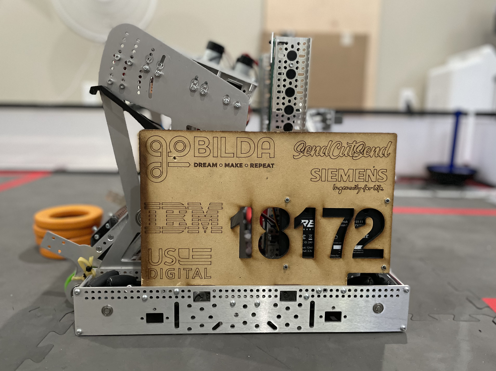
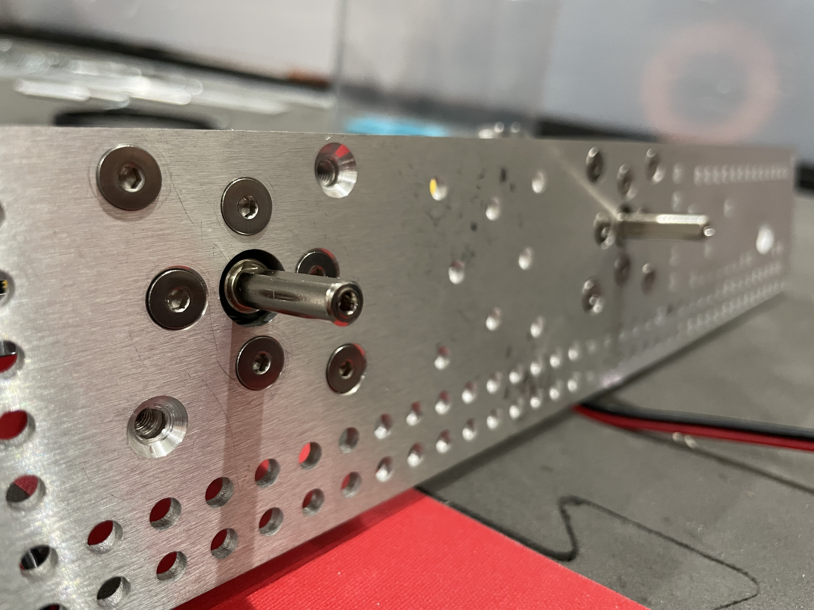

December 2020

Welcome to the first official Uplift Robotics Newsletter! With this being the first newsletter of the season, we clearly have a lot to catch up on. Therefore, this is going to be the longest newsletter we will probably ever write and we promise we will try and make it as entertaining as possible. The full newsletter is about a 10 minute read so if you don't have time to read the whole update, don't worry. Just watch the match video and we will leave a summary at the bottom. Enjoy :)
Meet 1 Recap
Meet 1 was the first big test for our team. Due to a severe scheduling oversight (more on that later), we had to work on the fastest build timeline any of our team members have ever experienced assembling the entire robot from the drivetrain up in a mere 8 days. Due to our thorough planning, we were able to finish the robot and have a successful meet 1! With that said, we are going to give you a quick rundown of our current robot detailing a few of the significant modules so you can see the development that's gone on throughout the season.
Drivetrain

The Drivetrain is currently in its 2nd iteration (technically v1) and was altered from the original specifications for this season. The initial drivetrain known as v0 was built over the offseason as a testbed for both our software team and to test our manufacturing capabilities with SendCutSend (They've done incredible work and we can't thank them enough for their support). There are two main differences between v0 and the current v1. The current drivetrain has a slightly slower gearbox that makes more torque in order to account for the heavy weight of the robot (somewhere in the ballpark of 30-40lbs which is heavier than we are used to) and to allow us to push other robots come face to face competitions. The other main difference is the grids of holes added to the walls to allow us to mount other modules. The original drivetrain didn't have these due to stability concerns and we were unsure if we would need that extra space for any sort of modifications or to account for any mistakes made in CAD.

This drivetrain was built long before everything else back when the challenge came out in September and was completed in late October and has been bulletproof ever since. The main thing that was changed during that build period was revisions to our custom odometry pods to make them as consistent as possible. Those pods allow us to track our exact position on the field on a coordinate-based system making our autonomous fast to program and more consistent in the long run. We don't plan on rebuilding this drivetrain anytime this season as it has been super reliable and although there are some things we'd like to change on it there is nothing that is urgent or necessary.
Intake

Our Intake is in its first hardware iteration and while it was functional at this competition it has a long road ahead in terms of development. The main issues with it right now are its size and complexity. Throughout the competition, we had issues with it jamming due to the series of belts and gaps between the belts rendering the intake virtually useless in those matches. This is a massive problem as we have no way of scoring points if the intake doesn't work. Fortunately, we already have a plan in action to revise the intake as well as to reduce the footprint of it increasing efficiency and reliability.
Shooter
The shooter was hands down the most "successful" module of the competition (excluding the drivetrain of course). This was mostly due to the hardware prototypes we did of the shooter while designing that allowed for a lot of iteration and testing before we shipped a final design. This made our shooter very consistent considering that it was the first iteration and we have a good understanding of what needs to be changed to improve it in the future. We consider it the most successful because it has to deal with the most variability and so many things could've gone wrong with the design that didn't.
Autonomous
Our software team was able to put together a full autonomous program in about half the time it would normally take us due to odometry(pictured to the right). What these amazing encoders (thank you US Digital!) allow us to do is track our exact position on the field in a coordinate-like system. What this allows us to do is tell the robot to drive to a certain position rather than trying to time it in seconds or do various other trial and error processes. This makes the auto more reliable and easier to change as there is little to no variability in the path of the robot removing a lot of the need to spend a significant amount of time working on consistency. Speaking of consistency, however, we had some issues with the program for odometry that we are working to improve for future competitions to ensure that we don't have any of the crashes/hangups that we experienced at this meet. If you want to find out more about odometry, click here for the youtube video we made on it a few months back.
Match Video
With all of that said, here is our best match from this meet. We scored a grand total of 98 points which we were pretty happy with considering the circumstances. There are some very easy ways to add on a lot of points such as the wobble goal(here is the challenge video if you are unfamiliar with the game) in the future that we chose to pass on in order to test some of our more complex mechanisms. Therefore, we are aiming for a score in the 150-200 point range for the next competition and are excited to see how we progress. If you have any questions about how our robot works or anything about the game in general feel free to contact us!
What's Changing?
While these meets do test the functionality of our robot, they also test the team as a whole and function as a milestone for reflection. What dominated the post-meet discussion with the mentors was scheduling. One of the fundamental aspects of Uplift is that it's run by the students. While this creates an unmatched opportunity for us to learn both engineering and management skills, it often leads to things being overlooked. Scheduling was the fundamental failure of this meet. Our parts were initially slated to be ordered on October 25th but they weren't ordered until November 22nd. Due to this mistake, we are coming back with vengeance to try and right this wrong based on our mentor feedback. Chase Kaplan, one of our veterans, has been moved from design to a designated project management role where he now solely manages scheduling for hardware and software and manages a lot of the business side of the team. We are hoping this will allow us to stay on schedule with a designated student to enforce scheduling rather than a mentor and will allow him in addition to other students the opportunity to learn about management along the way.
Based on mentor feedback, we hit the ground running setting up a sprint-based timeline in Jira in order to schedule out our tasks for the next meet. We are now over a week in on this system and it has solved most of our past issues by keeping us accountable. With these deadlines, we are also requiring documentation in order for each task to be considered complete ensuring that our engineering notebook stays up to date as the robot progresses. This system will keep us on time in the future allowing for longer build timelines and more testing before each competition in order to ensure more reliable and higher-scoring performance. We are also observing a generally better quality of work since our workloads are now spread out over several weeks instead of being procrastinated and done last minute as our teenage intuition tells us to do. The results so far seem extremely promising and we hope to return with more positive results in the future!
Summary
Well, that ended up being quite a read! I would like to personally apologize to my team members who had to review this and the friends, family, and sponsors who are reading this for the sheer mass of information presented to you.
If you didn't read it, here is the summary we promissed at the beginning:
Meet 1 was overall a success and was the learning experience our team needed in order to improve in the future.
The robot conceptually worked and we have a plan of action as to how to improve it for nearly every module
We've implemented a new scheduling system to ensure that we stay on schedule to improve our design process.
We are hoping to reach the 150-200 point range for the next meet in mid January.
We've learned so much throughout the beginning of this year and are excited for continued progress in the future.
None of this would be possible without our sponsors, mentors, and families so thank you!